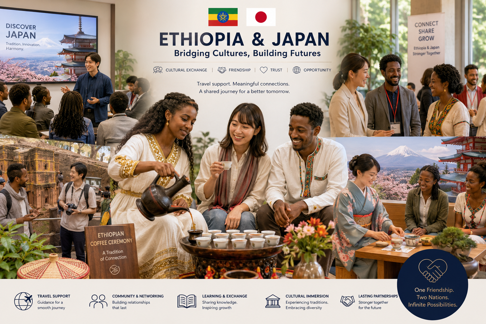

Three Pillars. One Bridge.
3つの柱、ひとつの架け橋。
EthioMirai connects Japan and Ethiopia through Education, Cultural Exchange, and Business Partnerships. Every program and service we offer belongs to one of these three pillars.
エチオ未来は、教育・文化交流・ビジネスパートナーシップを通じて日本とエチオピアをつなぎます。すべてのプログラムとサービスは、この3つの柱のいずれかに属しています。
Education & Opportunity
教育と機会
Helping individuals access educational, language, and professional opportunities between Japan and Ethiopia.
日本とエチオピアの間で、教育・語学・キャリアの機会への扉を開きます。

Education is the most powerful bridge between two countries. EthioMirai guides students through the path to Japan, supports language learning in both directions, and builds educational partnerships that outlast any single program.
教育は、二つの国をつなぐ最も力強い架け橋です。エチオ未来は、日本への道のりを歩む学生を導き、双方向の語学学習を支え、一つのプログラムにとどまらない教育パートナーシップを築きます。
Because we have lived this journey ourselves, our guidance is honest and practical — from the first information session to settled student life in Japan.
私たち自身がこの道を歩んできたからこそ、最初の説明会から日本での学生生活が落ち着くまで、誠実で実践的なサポートを提供できます。
Student Support学生サポート
Study in Japan guidance, Japanese language school introductions, educational pathway guidance, and information sessions.
日本留学ガイダンス、日本語学校の紹介、進学パスの案内、留学説明会を実施します。
Language Support語学サポート
Japanese language learning, Amharic language support, and cross-cultural communication.
日本語学習、アムハラ語サポート、異文化コミュニケーション支援を提供します。
Educational Partnerships教育パートナーシップ
School-to-school collaboration and academic networking between Japanese and Ethiopian institutions.
日本とエチオピアの教育機関同士の連携・学術ネットワーキングを推進します。
Career Guidanceキャリア支援
Professional networking and opportunity sharing for those building careers across both countries.
両国にまたがるキャリアを目指す方への人脈づくりと機会の共有を行います。
Maya Nihongoマヤ日本語
EthioMirai’s Japanese Language & Student Support Program. Japanese language classes, JLPT preparation, study-in-Japan support, language school partnerships, and a student community — the education pillar in action.
エチオ未来の日本語・留学生支援プログラム。日本語クラス、JLPT対策、日本留学サポート、語学学校との連携、学生コミュニティ——「教育と機会」の柱を体現するプログラムです。
Who This Pillar Servesこの柱の対象者
Ethiopian students and professionals heading toward Japan; Japanese institutions seeking international collaboration; and anyone learning Japanese or Amharic to connect with the other side.
日本を目指すエチオピアの学生・社会人、国際連携を求める日本の教育機関、そして相手国とつながるために日本語やアムハラ語を学ぶすべての方が対象です。
Tourism & Cultural Exchange
観光と文化交流
Building stronger connections between Japan and Ethiopia through tourism, cultural experiences, and people-to-people engagement.
観光や文化体験、人と人との交流を通じて、日本とエチオピアの結びつきをより強くします。

Lasting bridges are built between people. EthioMirai creates the spaces where Japanese and Ethiopian communities meet — cultural events, seminars, exchange programs, and delegation visits in both countries.
長く続く架け橋は、人と人の間に築かれます。エチオ未来は、文化イベント、セミナー、交流プログラム、視察団の受け入れなど、日本とエチオピアのコミュニティが出会う場をつくります。
For visitors crossing the bridge in either direction, we provide travel support and local guidance grounded in genuine cultural understanding — real experiences with people who know both worlds.
どちらの方向に橋を渡る方にも、深い文化理解に根ざした渡航サポートと現地ガイダンスを提供します。両方の世界を知る人間だからこそできる、本物の体験をお届けします。
Delegation & Exchange Visits視察・交流訪問
Organizing and coordinating business and cultural delegation visits that strengthen partnerships, encourage knowledge sharing, promote meaningful exchange, and build lasting connections between the two countries.
パートナーシップを強化し、知識共有を促し、有意義な交流を推進し、両国間の永続的なつながりを築く、ビジネス・文化視察団の企画・調整を行います。
Travel Experiences & Visitor Support旅行体験・来訪者サポート
Providing travel consultation, visitor support, local guidance, and authentic cultural experiences that help individuals and groups explore Ethiopia and Japan with confidence and meaningful connections.
個人や団体が自信を持ってエチオピアと日本を巡り、意義あるつながりを持てるよう、渡航相談、来訪者サポート、現地ガイダンス、本物の文化体験を提供します。
Media & Storytelling Projectsメディア・ストーリーテリング
Stories that build understanding between the two countries — articles, conversations, and community voices.
記事、対談、コミュニティの声——両国の相互理解を育むストーリーを発信します。
Events & Seminarsイベント・セミナー
Cultural events, seminars and presentations, and community building in both countries.
文化イベント、セミナー・講演、両国でのコミュニティづくりを行います。
Business & Partnership Support
ビジネスと提携支援
Helping organizations identify opportunities and build successful partnerships between Japan and Ethiopia.
日本とエチオピアの間でビジネス機会を見出し、成功するパートナーシップを築くお手伝いをします。
Most advisors know one market. We know two. EthioMirai supports Japanese organizations exploring Ethiopia and Ethiopian organizations approaching Japan — with cultural fluency in both directions, working command of Japanese, Amharic, and English, and personal networks on both sides.
多くのアドバイザーは一つの市場しか知りません。私たちは二つの市場を知っています。エチオ未来は、エチオピア進出を検討する日本の組織と、日本市場を目指すエチオピアの組織の両方を支援します。双方向の文化理解、日本語・アムハラ語・英語の実務能力、両国の人的ネットワークが私たちの強みです。
Our introductions are built on real relationships, not cold databases, and we stay with you from the first conversation through an established partnership.
私たちのご紹介は、データベースではなく実際の信頼関係に基づいています。最初のご相談からパートナーシップの確立まで、一貫して伴走します。
Business Matching & Partnership Developmentビジネスマッチング・提携構築
Introductions to vetted counterparts and organization-to-organization collaboration in both countries.
信頼できるパートナー候補のご紹介と、両国の組織間連携を支援します。
Market Research Support市場調査サポート
Local market insights gathered through our networks — practical, decision-oriented, in both directions.
現地ネットワークを通じた実践的な市場インサイトを、双方向で提供します。
Translation, Interpretation & Meeting Coordination翻訳・通訳・会議調整
Cross-cultural business communication that makes sure nothing important is lost between languages.
言語の壁で大切な意図が失われないよう、異文化ビジネスコミュニケーションを支援します。
Delegation Support & Project Facilitation視察支援・プロジェクト推進
On-the-ground coordination for business delegations and end-to-end facilitation of cross-border projects.
ビジネス視察団の現地コーディネートと、国境を越えるプロジェクトの一貫した推進支援を行います。
Clients on Both Sides of the Bridge
架け橋の両側のお客様へ
EthioMirai works with individuals and organizations in both countries — anyone seeking to connect with the other side.
エチオ未来は、相手国とのつながりを求める両国の個人・組織と協働します。
Companies & investors exploring Ethiopia opportunities
エチオピアの事業機会を探る企業・投資家
Educational institutions building international programs
国際プログラムを展開する教育機関
Visitors & delegations discovering Ethiopia
エチオピアを訪れる旅行者・視察団
Organizations seeking trusted local partnerships
信頼できる現地パートナーを求める組織
Students planning to study in Japan
日本留学を目指す学生
Entrepreneurs & businesses approaching the Japanese market
日本市場を目指す起業家・企業
Professionals seeking careers with Japanese companies or Japan-related work opportunities
日本企業での就労や、日本関連の仕事の機会を求める社会人
Organizations seeking Japanese partnerships
日本とのパートナーシップを求める組織
Visitors & delegations discovering Japan
日本を訪れる旅行者・視察団
How We Work
私たちの仕事の進め方
Every engagement follows a clear, professional process designed to deliver real outcomes.
すべての案件で、確かな成果につながる明確でプロフェッショナルなプロセスを踏みます。
Understand理解する
We take time to understand your situation, goals, and context before proposing anything. No assumptions, no generic solutions.
ご提案の前に、状況・目標・背景をじっくり理解します。思い込みや画一的な解決策は持ち込みません。
Plan計画する
We design an approach matched to your specific needs, with clear objectives and realistic expectations on both sides.
明確な目標と現実的な期待値を双方で共有しながら、ニーズに合わせたアプローチを設計します。
Execute実行する
We deliver with the discipline and attention to detail expected in Japanese professional environments.
日本のビジネス環境で求められる規律ときめ細やかさをもって実行します。
Follow Through継続する
We maintain the relationship after the work is done. Partnerships are built over time, not in a single engagement.
案件が終わった後も関係を大切にします。パートナーシップは一度の取引ではなく、時間をかけて築くものです。